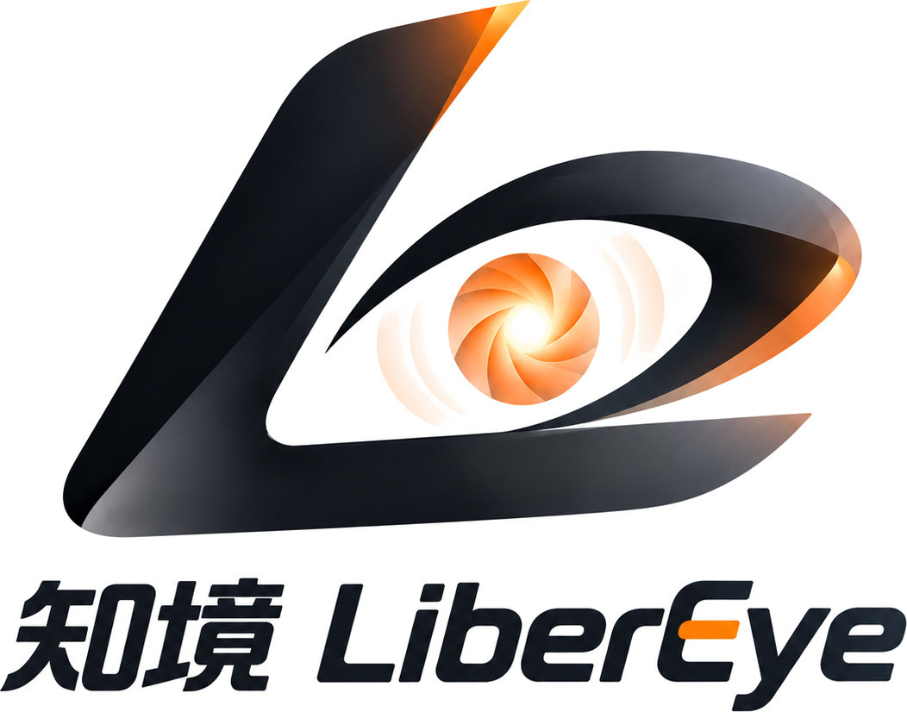
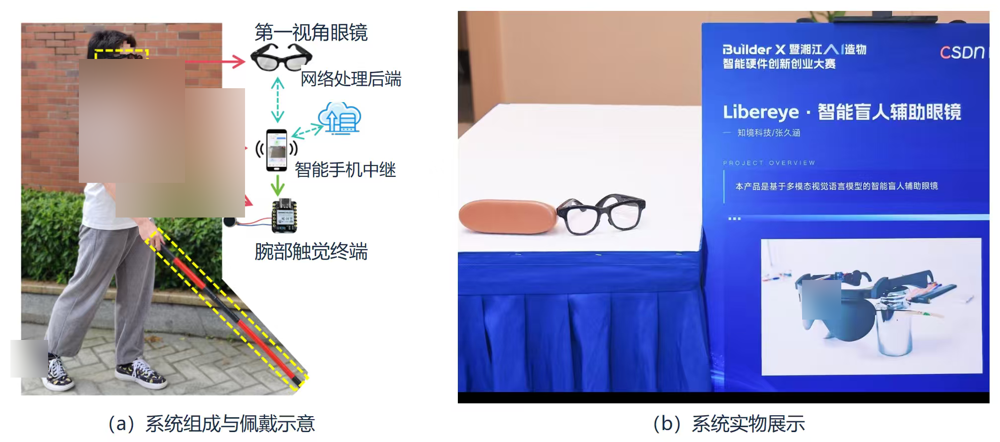
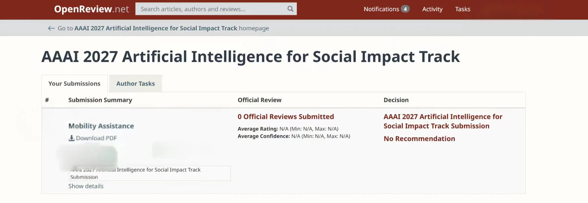
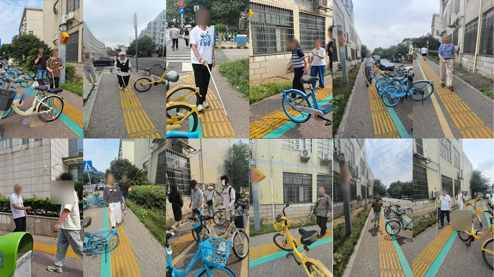
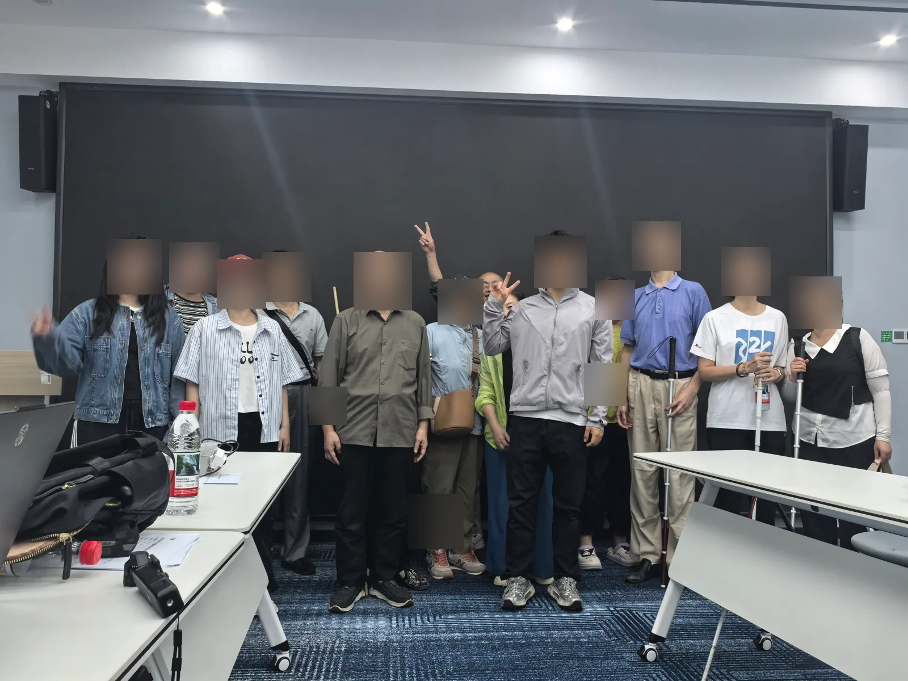
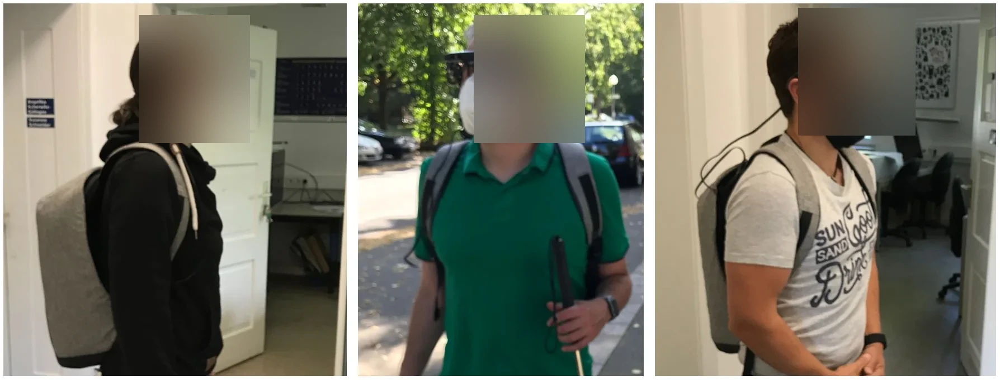

先理解真实需求
以用户交流、机构走访和道路场景试用为基础，识别日常出行中的具体障碍。

知境科技LIBEREYE · SEE BEYONDHUMAN-CENTERED ASSISTIVE TECHNOLOGY
知境科技聚焦视障人群的真实出行需求，以视觉理解、多传感器感知与多感官交互为基础，探索更轻量、更连贯、更贴近日常生活的智能辅助体验。

REAL-WORLD PROTOTYPE对视障人士而言，出行是一段持续感知环境、理解信息、判断风险并作出选择的过程。
我们通过机构走访、陪伴服务、道路试用与开发者测试，持续观察真实场景中的困难。我们关注提示是否及时、交互是否轻松、设备能否融入日常——让技术解决具体问题，而不是带来新的负担。
了解我们的真实场景验证 ↗以用户交流、机构走访和道路场景试用为基础，识别日常出行中的具体障碍。
组合语音、触觉与振动反馈，尽量减少频繁看屏和复杂操作。
从原型联调到场景复测，让每一轮迭代都有真实反馈作为依据。
LiberEye 由可穿戴感知硬件、手机协同端与多感官反馈组成。点击下方产品卡片或圆形图标，即可查看各模块的设计目标、工作方式与当前探索方向。
通过摄像头与多种传感器采集环境信息，结合视觉语言模型与边缘侧处理能力，生成易于理解的风险提示，并通过语音和触觉方式反馈给使用者。
说明：网站展示的是团队研发原型与技术探索方向，不代表已量产商品或医疗器械；实际功能与性能以持续测试结果为准。
以多模态模型理解场景，以实时系统协调任务，以多传感器融合提高信息一致性；同时根据使用环境探索本地离线与端云协同方案。
探索 Qwen2-VL、MobileSAM 系列等视觉模型，面向场景语义理解、目标识别与风险提示构建算法流程。
根据算力、网络与响应需求选择本地推理或云端模型，持续评估离线运行能力和数据处理边界。
探索 FreeRTOS 多任务架构，隔离传感采集、通信和交互任务，提升资源受限设备的稳定性。
通过时间戳同步与滤波融合，研究视觉、深度、姿态和定位信息的互补使用与连续性。
项目已积累原型研发、用户试用、赛事认可与学术探索等阶段性基础。
团队成为学院第一个获得湘江科技创新院预探索立项培育的团队，项目进入阶段性探索与验证。
项目培育 · 技术验证 · 产业对接获得赛区一等奖，为项目方案与团队工程实践提供阶段性认可。
赛区一等奖进入全国前 15 名，展示可穿戴硬件与辅助交互方案。
全国前 15 名获得“柳枝行动”50 万元投资意向，并入选国家级大学生创新创业训练计划相关重点项目。
投资意向 / 创新创业项目
RESEARCH & MEDIA
团队材料显示，相关成果已投稿 AAAI 2027 Artificial Intelligence for Social Impact Track，并计划围绕系统研究筹备 ICRA 2027 投稿。
项目曾获得媒体报道，并在创新创业成果展等公开场景进行展示。
通过机构走访、道路试用、开发者测试与视障用户交流，不断收集反馈并改进原型。
以上为项目阶段性成果与团队材料所述进展。投稿、培育、投资意向等表述不等同于论文录用、产品量产或资金已到账。
团队持续开展道路场景试用、视障用户交流和穿戴原型测试，观察产品在复杂环境中的使用体验。



以六个月阶段性探索计划为框架，围绕原型基线、软硬件联调和复测评估逐步推进。
整理硬件版本、重点场景、测试数据与安全流程。
推进感知、语音与触觉协同联调，开展受监督的用户试用。
复测关键问题，评估 BOM 与维护成本，并梳理后续合作路径。
我们期待与视障用户、助残机构、高校科研团队及产业伙伴交流合作，共同推动辅助技术持续验证与完善。
当前邮箱为演示占位地址，正式发布前请替换为团队实际联系方式。